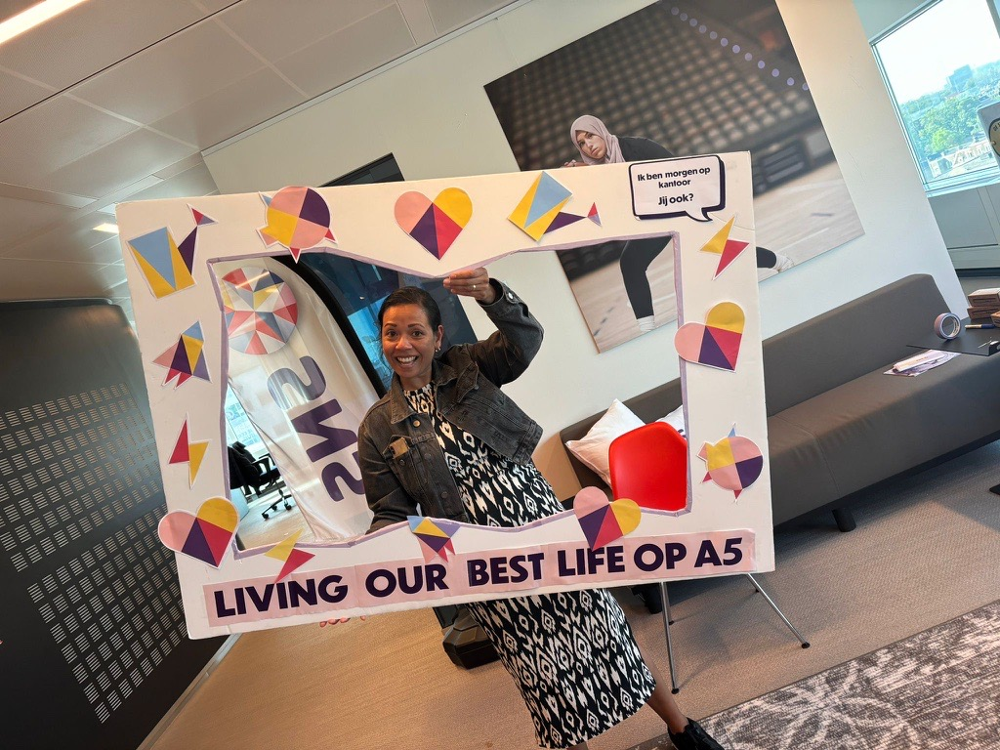

Sushanti van Klaveren is een enthousiaste en gedreven professional met een passie voor communicatie, creativiteit en het verbinden van mensen. Met haar scherpe oog voor detail en sterke organisatorische vaardigheden weet ze projecten efficiënt te coördineren en tot een succes te maken.
Op deze pagina vind je haar curriculum vitae en contactgegevens. Neem gerust contact op voor een kennismaking of samenwerking.
